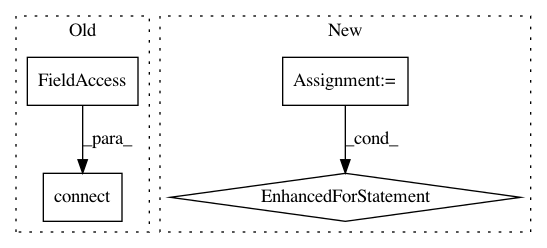

8f848a2684ab0ec0e12d313757c7cea0736d7a3d,gui/mozregui/report.py,ReportModel,attach_bisector,#ReportModel#Any#,72
Before Change
@Slot(object)
def attach_bisector(self, bisector):
bisector.step_started.connect(self.step_started)
bisector.step_build_found.connect(self.step_build_found)
bisector.step_testing.connect(self.step_testing)
bisector.step_finished.connect(self.step_finished)
bisector.started.connect(self.started)
bisector.finished.connect(self.finished)
After Change
@Slot(object)
def attach_bisector(self, bisector):
slots = ("step_started", "step_build_found", "step_testing",
"step_finished", "started", "finished")
if self.bisector:
// disconnect previous bisector
for name in slots:
signal = getattr(self.bisector, name)
slot = getattr(self, name)
signal.disconnect(slot)
if bisector:
// connect the new bisector
for name in slots:
signal = getattr(bisector, name)
In pattern: SUPERPATTERN
Frequency: 4
Non-data size: 4
Instances
Project Name: mozilla/mozregression
Commit Name: 8f848a2684ab0ec0e12d313757c7cea0736d7a3d
Time: 2015-03-29
Author: j.parkouss@gmail.com
File Name: gui/mozregui/report.py
Class Name: ReportModel
Method Name: attach_bisector
Project Name: danforthcenter/plantcv
Commit Name: 25bdfd7ca876bf714309c84648317b4a3f7227ce
Time: 2017-04-05
Author: noahfahlgren@gmail.com
File Name: plantcv-pipeline.py
Class Name:
Method Name: db_connect
Project Name: keras-team/keras
Commit Name: 65e4f94e45f32d9cbe99337d74ed9c1ebad3412a
Time: 2015-06-03
Author: jason.ramapuram@viasat.com
File Name: keras/layers/core.py
Class Name: AutoEncoder
Method Name: __init__
Project Name: commonsense/conceptnet5
Commit Name: 3f43e40494c1add760b3fb5cb2a9abc3284d4b22
Time: 2016-09-29
Author: rob@luminoso.com
File Name: conceptnet5/db/connection.py
Class Name:
Method Name: get_db_connection